本文翻译自《Thinking Clearly About Performance》
作者
cary millsap, Method R Corporation, Southlake,
Texas, USA
校订
2010/07/22
摘要
对于开发者、技术管理者、架构师、系统分析师和项目经理来说，创建具备高性能特征的复杂软件都是一件极其困难的事。
然而,通过了解一些基本原理、性能问题的解决和预防可以更简单、可靠。
本文讲述了这些基本原理，涵盖了一系列的目标、术语、工具和决策，综合利用好它们来最大可能的创建一个长期、有效的高性能应用。
本文的一些例子来自于oracle的经验，但本文的范围并不局限于oracle的产品。
目录（略）
1. 公理化方法
当我在1989年加入 oracle 公司时，解决性能问题（人们通常说的 oracle
调优）是很困难的。 只有少部分人声称他们很擅长这个，很多人都去咨询他们。 当时，我进到 oracle 调优这个领域时，我完全没准备好。
最近我又开始对 mysql 进行调优，这看起来和我20年前在 oracle 公司做的差不多。
它让我想起了当我13岁刚接触代数学时是多么的困难。 在那个年龄我只能依靠“数学直觉”来解决类似 3x + 4 = 13 这样的方程。 问题是我们之中大部分人都没有所谓的“数学直觉”。 我记得当看到这样的问题: 3x + 4 = 13 求解x，只能采用试错法偶然发现 x 应该是3。
试错法给我的感觉虽然能解决一些简单的方程式，但很慢而且不爽。 一旦等式稍有变化如 3x + 4 = 14，试错法就不能适应。
那么该怎么办呢？当时我没有好好思考过，直到15岁时James R. Harkey指引我走上正确的道路。
Harkey
先生教会我使用公里方法来解决代数方程问题。 他给我们展示了一系列的步骤（还给了我很多家庭作业进行练习）。
做作业时除了记录下这些步骤，还要写下我们是如何思考的。
这样我们不仅自己想的很清楚，而且通过一系列可靠的，可重复的步骤来向阅读我们作业的人证明了我们确实搞明白了。 Harkey
先生看到的我的作业像下面这样：
3.1x + 4 = 13 待求解方程
3.1x + 4 - 4 = 13 - 4 减去相等的值
3.1x = 9 加法逆运算，化简
3.1x ∕ 3.1 = 9 ∕ 3.1 除以相等的值
x ≈ 2.903 乘法逆运算，化简求解
这就是 Harkey 先生教导的适用于代数学、几何学、三角学和微积分的公理化方法。 由一系列符合逻辑的、可证明和审计的小步骤组成。 这是我第一次真正从数学中学到的东西。
自然，当时我没能认识到其中的价值，但证明作为一种技能对我后来的成功至关重要。 我发现在生活中，知道一件事很重要，但能向别人讲清楚（证明）更重要。 没有好的证明技能，就很难成为一名好的顾问、好的领导甚至好的员工。
我在上世纪90年代中期的目标是为 oracle 性能优化创建一套类似的、严格的公理化方法。 后来我将其扩展到了 oracle 之外，建立了一套适用于所有计算机软件性能优化的公理化方法。 好吧，我发现并非所有人都喜欢这种说法，那我们换一种说法：
我们的目标就是帮助你想清楚如何优化你的软件系统性能。
2. 什么是性能？
假如你去 google 下 performance 这个关键字，可能会得到5亿个链接。
其中涉及的内容范围可能从自行车比赛到可怕的员工审查流程（如今很多公司已经学会了避免这个流程）。 但假如我去 google 下
performance 这个关键字，大部分的首页链接都会与这篇文章的主题有关：计算机软件执行无论何种任务所花费的时间。
任务这个词是一个很适合的开始。 任务是一个面向业务的工作单元。 任务能够嵌套：打印发货单是一个任务，打印一张发货单（一个子任务）也是一个任务。 当一个用户说起性能时，他通常指的是系统执行一系列任务所花费的时间。 响应时间是任务的执行时长，用每个任务的时间来度量，像：每点击秒数。 例如我用 google 搜索关键字 performance 的响应时间是 0.24 秒。 这个数据来自我的浏览器渲，它渲染完google网页花费的时间，那么很明显，这量化了我对 google 性能的直觉感知。
一些人对另外一个性能指标很感兴趣：吞吐量。 吞吐量是在一个特定时间段内完成的任务的计数，例如：每秒点击数。 通常为一群人提供服务比为个别人提供服务的人更关心吞吐量。 例如，一个独立会计会更关心日报的响应时间是否会导致今晚需要加班，而会计部的经理更关心系统的是否能支撑所有的会计处理完今天的数据。
3. 响应时间 VS. 吞吐量
通常来讲，响应时间和吞吐量是一个倒数关系（响应时间越长吞吐越低），但这并不确切。 实际情况更微妙、复杂一些。
例： 假如，在一些性能基准测试中，你的系统的测量结果是每秒能处理1000个任务，那么用户的平均响应时间是多少？ 你可能会说平均响应时间等于 1 / 1000 = .001 秒/每任务，但它真不是这样的。 假如在你的系统内部拥有1000个相同的、独立的、并行的服务执行通道，每个通道都在等待请求到来并提供服务。 在这种情况下，每个请求其实花费了1秒。 现在我们知道，平均响应时间其实应该在每任务0秒到1秒之间。 但是我们不能仅仅从吞吐量的测量数据中推导出平均响应时间。 （事实上存在数学模型从吞吐量推导出平均响应时间，但这个模型要求更多的输入参数，而不仅仅是吞吐量） 你必须单独测量它。
反过来说也是一样的，你应该能从我上面给出的例子中得到启发。 下面是一个更有趣的例子。
例： 你的客户要求一个新任务必须满足在单核 cpu 的计算机上达到每秒100的吞吐量。 假如这个新任务在客户的系统上执行一次需要 0.001 秒。 那么你的程序能够满足客户要求的吞吐量么？ 你可能会说，跑一次这个任务只需要千分之一秒，那么在一秒内完成100次显然是绰绰有余的。 恩，是的，你很正确，假如这个任务被很好的串行化了。 例如，你的程序处理100个任务执行请求是在一个循环中，一个接一个的执行，那就是正确的。 但是如果这100个任务到达你的系统是完全随机的来自100个不同的用户，那该怎么办呢？ cpu 调度器和串行资源（oracle 的闩和锁，内存可写缓冲区访问）这些糟糕的实际情况会严格限制你的并发吞吐量低于每秒100。 最终，你可能会达到客户的期望也可能达不到。 你不能仅仅从响应时间推导出吞吐量，你必须单独测量吞吐量。
所以，响应时间和吞吐量不是那么简单的互为倒数关系。 你想要知道这两个指标，就必须一起测量它们。
那么响应时间和吞吐量到底哪一个更重要呢？ 在一些场景下，说哪一个都是合理的。 但在大多数情况下，两者都同样重要。
因为，对系统来说它的业务需求通常是这样的，在大于99％的情况下响应时间要少于1秒，并且能支持10分钟内持续不低于1000的吞吐量。
4. 百分比描述
在上一节，我用了“大于99％”这样的描述来表达对响应时间的期望。
但大部分人可能更习惯于这样的描述：“平均响应时间少于 r 秒”。 但从经验的角度，使用百分比方式更好。
例： 假如你对一些每天运行在你的计算机上的任务的响应时间的容忍极限是1秒。 进一步假设图表1列出了该任务执行10次的测量值。 这两个列表的平均响应时间都是1秒。 哪一个你认为更好？ 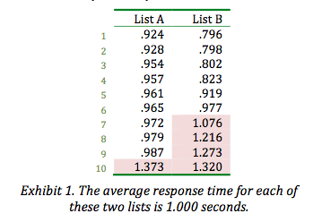
你看到虽然两个列表拥有同样的平均响应时间，但本质上差别很大。 ListA 90％的响应时间是低于1秒的，而ListB只有60％的时间是低于1秒的。 从用户体验的角度来说，ListB表明会有40％的用户会感到不满意，而ListA仅有10％的不满意率，虽然它们平均响应时间相同。 ListA 90％的响应时间是0.987秒，而ListB 90％的响应时间是1.273秒。 因此使用百分比描述的响应时间比平均响应时间包含更多的信息量。
正如GE公司所说：“客户感受到的是差异变化，而非平均”。（参见GE的《什么是六西格玛》） 可见使用百分比来描述响应时间更符合终端用户的期望:
99.9%的跟踪货运单的任务必须在0.5秒内完成。
5. 问题诊断
最近我被邀请去解决的一些性能问题的描述都是些关于响应时间的。
如：“过去只用不到1秒的时间就能完成X任务，但是现在却需要20秒。”
当然，一些真正的问题隐藏在其他一些问题描述的表象背后，例如：“我们的系统变的很慢，完全没法用了。”
虽然我经常碰到类似这样的表述，但并不意味着你应该这样去描述问题。 首先你得清晰得描述问题本身，才可能把它们弄清楚。 一个好办法是去询问，你想要达到得目标状态是怎样的呢？ 找到一些细节，你可以用量化的方式来表达它们。 例如：执行 X 任务大部分情况下都超过20秒，希望能在95%的情况下小于1秒。
理论上这听起来很棒，但要是你的用户根本没有很具体的可以量化的目标呢？
或者你的用户根本就不知道怎样去量化，更糟糕的情况是你的用户如果还有一些完全不切实际的期望怎么办？
你如何知道到底什么是“可能的”，什么是“不切实际的”？
好吧，下面我们继续探讨这些问题。
6. 序列图
序列图是一种UML（统一建模语言）中定义的图形种类，用于表达对象间交互的发生顺序。
序列图特别适合用于可视化的表达响应时间。 在图表2中，我们展示了一个由浏览器、应用服务器和数据库构成的简单应用系统的序列图。
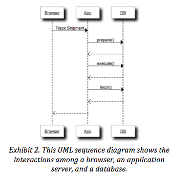
假如我们扩展下序列图的表示，让请求和响应之间距离表示服务该请求的消耗时长。 在图表3中我展示了一个扩展后的序列图。
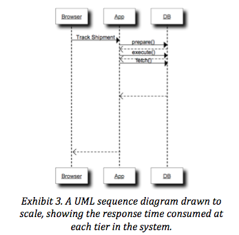
通过图表3,你可以很直观的看到到底是哪个部分消耗了最多的时间。 你能直观的感受到整个响应时间在各个部分的构成。
序列图很好的帮助人们从概念上直观的理解一个任务如何在系统各个部分之间顺序流转的。 序列图也能很好的表达并行执行的任务。
序列图也是一个很棒的工具用于在业务层次分析性能问题。
序列图是很好的描述性能问题的概念工具，但要把性能问题分析清楚我们还需要其他的。
序列图的问题是，假设有个任务花费了2468秒才执行完成（大约41分钟8秒）。 在这41分钟里，应用服务器和数据库大约交互了322968次。
把这个过程画成序列图大概就是下面图表4的样子：
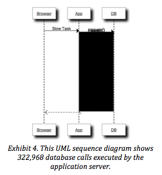
在应用服务器和数据库之间有如此之多的箭头，以至于你完全看不清细节了。 我们可能需要花费数周才能画完这个图，但这并不是一个有效的方法。
序列图虽然很好的概念可视化了任务的执行流和时间流，但要仔细分析清楚响应时间的问题我们还需要别的工具。
7. 断面分析
对于像上述这种拥有大量调用交互的情况，序列图不能很好的描述。
我们需要一种更方便的聚合视图来更容易的理解到底哪个部分消耗了最多的时间。 图表5给出了一个断面分析的例子。
断面分析是对响应时间的表格化分解，按响应时长倒序排列如下。
例： 图表5中的断面分析是很初级的，但它能告诉你top 8 的慢任务占用了2468秒。 从中你大概可以得到每个函数的响应时长占比。 也可以从中算出每个函数调用的平均响应时间。
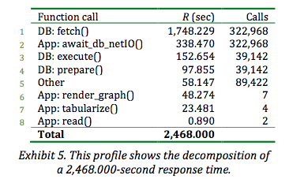
断面分析指出了哪些代码花费了你的时间，也许更重要的是告诉你哪些代码并没有花费太多时间。
当你不得不去猜测代码的性能瓶颈时，断面分析是有巨大价值的。
从图表5的数据表明，大约70.8%的响应时间消耗在了
DB:Fetch() 这个方法上。 如果你进一步深入方法调用中会发现 App:await_db_netIO() 方法与 DB:Fetch()
的一一对应关系。 于是能知道每个部分消耗了多少时间，通过断面分析你开始能够明确的回答像这样的问题：
“这个任务需要运行多长时间？”从第5节你可以知道，对问题诊断的第一步来说这是一个很重要的问题。
8. 阿姆达尔法则
断面分析能帮你分析清楚性能问题。 即使1967年吉恩·阿姆达尔（Gene
Amdahl）没有提出阿姆达尔法则，你也可以在看到断面分析表格时自己归纳出来。
阿姆达尔法则指出：
系统中对某一部件采用更快执行方式所能获得的系统性能改进程度，取决于这种执行方式被使用的频率，或所占总执行时间的比例
所以如果你尝试改进的部分只贡献了总响应间的5％，那么对总响应时间的提高最多不会超过5％。 这意味着你改进的部分在断面分析列表中排位越高（假设它们按倒序排列），你获得的收益就越大。 但这并不意味着你一定要按照断面分析列表的顺序从高到低进行改进，这里你还需要考虑改进的成本问题。
例： 看下图表6,它基本和图表5一样。 图表6额外给出了你实施最好的改进方案所能达到的效果以及相应的实施成本。
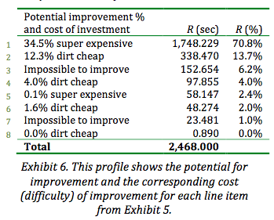
那么你应该先实现哪一项改进呢？
阿姆达尔法则告诉我们改进第一项的潜在收益最大，大约可以减少851秒（34.5% * 2468秒）。
但改进第一项真的非常昂贵，那么改进第二项也许能产生更多的净收益。
这才是我们真正需要改进的瓶颈所在，尽管它仅能节省大约303秒。
断面分析的巨大价值在于你能够确切的了解你预期的投资能获得多大的改进。 它为你的改进实施方案提供了决策支持。 为你在预测给性能问题的度量时提供了参照。 当你能够找到一种比预期成本更低、减少响应时间比预期更多的改进方式时，这给你了一个很好展示聪明才智的机会。
你首先实施哪一项改进，归结于你到底有多相信你的成本估计。 “相当便宜”的改进的措施是否考虑了改进可能造成的系统风险？ 一个很简单的改进，例如调整了某个参数，取消了一个索引可能会潜在的破坏了一些目前性能表现良好的功能，而你又完全没考虑倒。 可靠的成本估算属于另一个领域，它依赖你的技术经验能力。
另一个因素值得考虑的是,你可以通过创建小的胜利来赚取政治资本。 也许一些便宜低风险的改进并不能带来响应时间的大幅度降低，但可以通过跟踪记录这些小改进来印证你对响应时间提升的预测。 在神话和迷信统治了数十年的软件性能领域，这些对性能的预测和印证的跟踪记录，可以影响你的同事（工程师、经理、客户）并建立自己的信誉，然后你才可能实施更昂贵的改进方案。
最后提醒一句：当你不断取得胜利并建议实施成本更高、风险更大的改进措施时，可千万别掉以轻心。 信任是很脆弱的，你做了很多事情才取得信任，但可能只是因为一次粗心大意的错误就会摧毁它。
9. 倾斜量
当你使用断面分析时，你可能老是遇到像下面这样的小问题。
例： 从图表5中可以看到一共调用了322,968次 DB:fetch()方法，花费了1748.229秒。 假如我们将调用量降低一半，那么响应时间会降低多少？
答案绝对不会是降低一半，花点时间思考下面这个更简单点的例子。
例： 调用4个方法花费了4秒钟，那么减少为调用2个方法花费多少时间？
答案依赖于我们省掉的调用到底是哪些方法。 你可能这样假设了，每个方法的平均调用时间就是 4 / 4 = 1 秒。 但我可没在问题描述中告诉你的，每个方法的调用耗时是一样的。
例： 假设下面两种可能性，每个列表列出了4个方法调用的响应时间
A = {1, 1, 1, 1}
B = {3.7, .1, .1, .1}
在列表A中响应时间是一致的，所以无论我们省掉了哪两个调用，最后响应时间都能缩短到2秒。
但在列表B中，到底省掉哪两个方法调用对响应时间的影响是有很大差别的。
如果我们去掉头两个调用，响应时间缩短为0.2秒，提升了95%。
但如果我们去掉的是后两个调用，响应时间变为3.8秒，仅仅提升了5％。
倾斜量表达在一组值中的非一致性程度。 正是因为倾斜的存在，所以你没法准确的回答我在本节开头的问题。
让我们再回头看看这个例子，在不知道倾斜量的前提下，你只能回答响应时间可能减少的范围是在0到1748.229秒之间，这也是你能提供的最好的回答了。
尽管如此，假设你有一些额外的信息例如图表7所示，你就能对最好和最坏的情况进行估算。
进一步说，假如你有了图表7中信息就会很聪明的去特别优化响应时间在0.01秒到0.1秒之间的那47,444个调用。
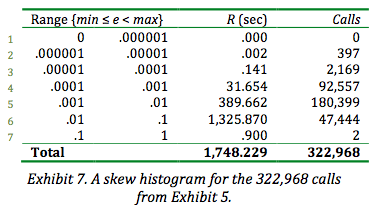
10. 最小化风险
前面的章节我提到过，当修复一个任务性能问题时可能破坏另一个任务的性能，让我想起了一件曾经在丹麦发生的事。 这个故事很短：
场景： 在丹麦的巴勒鲁普自治市（Måløv）的一张橡木餐桌前，大约10个人围坐一起，在用笔记本工作和相互交流。 Carry：伙计们我快热死了，你们不介意我打开窗户放点冷空气进来吧？ Carel-jan: 为什么你不把你的厚毛衣脱了呢？ 结束
这里有个一般原则你最好知道：
“当大家都很舒适除了你以外，那么你首先应该确保影响自己的东西是否正常, 否则你可能去搞乱一些全局的东西导致每一个人都受影响”
正是这个原则，当因为几个写的很烂的java应用程序有人建议我去调整oracle的网络包大小时让我感到很害怕。 这些很烂的程序产生了很多不必要的数据库调用，自然也产生了很多不必要的网络等待。 当其他一切正常除了这几个烂程序，那么最安全的做法是将调整的范围本地化，只需要去调整这几个烂程序就好了。
11. 效率
尽管整个系统让每一个人都倍受煎熬，你依然需要首先专注于业务上最优先需要修正的程序部分。
让程序工作的尽可能的高效是一个很好的切入点。 在不增加容量，不牺牲必须的业务功能的前提下，效率是能够节省下来的任务总执行时间的倒数。
换句话说，效率就是对浪费的一个反向度量。 下面是一些经常发生在数据库应用中浪费的例子。
例： 一个中间层程序为插入数据库的每条记录创建了一条独立的SQL语句。 它执行了10,000次数据库预编译语句调用，导致了10,000次网络I/O调用。 其实它可以只使用一条预编译语句，从而节省9,999次网络I/O调用。
例： 一个SQL语句访问数据库缓冲区缓存7,428,322次获得了698行的结果集。 使用一个额外的过滤预测，只返回了终端用户真正想要看见的7行结果,只需访问缓冲区缓存52次。
确实如果一个系统存在一些全局性的问题（不良索引、错误参数、弱弱的硬件配置）导致了一大片任务执行的低效率，你应当修正它。 但不要尝试调优系统去满足低效的程序。 有很多办法来调优低效的程序本身。 即使这个程序是商业的现成的软件，那么和你的软件供应商一起去优化程序本身比你去优化系统让其尽可能的高效从长期来说会更受益。
让程序变的更高效会让工作在这个系统上的每一个人都受益巨大。 很容易看到浪费的减少对任务响应时间的贡献。 但依然有很多人不明白为什么提升这部分程序的性能会导致一种副作用，让看起来完全不相关的另一个程序性能变差。 其实这是系统负载在作祟。
12. 负载
负载是并发任务执行时引发的资源竞争。
负载正是我们为什么不能在性能测试中捕捉到所有性能问题的原因，而这些问题以后会在生产环境发生。 负载的一个测量指标是使用率。
使用率反应了资源按时间分片的使用情况。 当某个资源使用率上升时，那么请求该资源服务的用户就不等不经历更长的响应时间。
任何一个在城市的高峰期开车的人都经历过类似现象。 当交通变的严重拥堵时，你不得不在收费站前等待更长的时间。
你的汽车在开阔的道路上能开上每小时60英里，但在拥堵的路上只能以每小时30英里的速度行驶，而软件不会像汽车这样真的变慢。 软件按照固定的同样的速度执行，每个时钟周期总是执行同样数量的指令，但响应时间会随着系统资源变的繁忙而严重退化。
负载上升系统变慢的原因有两个：排队延迟和相关性延迟。 下面我会进一步讲述。
13. 排队延迟
负载和响应时间之间在数学上的相关性大家都很熟悉了。
一个叫做"M/M/m"的数学模型将响应时间和负载关联起来应用于一些特定的需求场景下。
M/M/m模型的一个假设前提是你的系统模型拥有理论上的完美扩展性。
这个假设非常类似于我们在初级物理学课程中经常提到的光滑表面（无摩擦力）假设。
虽然M/M/m模型假设的条件有些不现实，如完美的可扩展性，但从中依然可以学到很多。 图表8使用M/M/m模型展示了负载和响应时间之间的关系。
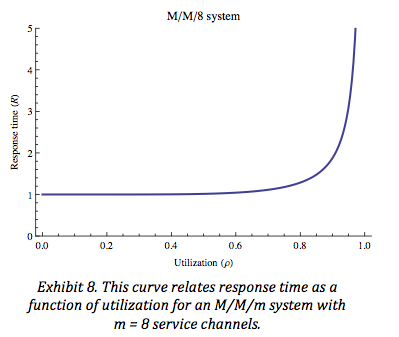
从图表8，你从数学的角度看到了系统在不同负载条件下给你的感受。 低负载下的响应时间和无负载基本一样。
当负载上升时，你能感受到响应时间有一个轻微、平缓的退化。
这种平缓的变化不会造成什么麻烦，但随着负载继续上升响应时间开始以一种急剧的方式退化，这可要造成大麻烦了。
响应时间在具备完美扩展性的M/M/m模型下由两个部分组成：服务时间和排队延迟。
就是这样一个等式：R = S + Q
服务时间（S）就是任务的执行时间。
排队延迟（Q）就是任务在队列中等待机会获得消费某个资源的时间。
所以当你在 Taco Tico（美国和墨西哥边境的快餐连锁）订餐时，你的订单响应时间（R）就包括了等待服务员来餐桌边接收订单的等待时间，这就是排队延迟等待（Q），而服务时间（S）就是从订单交到服务员时到食物送到你手上的等待时间。 同样，任务的响应时间在有负载和无负载的系统之间是有差别的。
14. 膝值
提及性能，你想要达到两个目标
1.
你想要获得最快的响应时间：你不想任务的完成需要太长的时间。
2.
你想要获得最大的吞吐量：同一时间能支持更多人执行他们的任务。
不幸的是这两个目标是相互矛盾的。
优化达到第一个目标需要你最小化系统的负载，而达到第二个目标则要最大化系统负载，二者不可兼得。 在这两者之间的某个负载值就是系统的最优负载。
处于最优负载平衡点的资源使用率的值，我称其为“膝值”。 系统中某种资源达到“膝值”后，那么吞吐量被最大化了而对响应时间只有很小的负面影响。
从数学上来讲，“膝值”就是响应时间除以资源利用率所得结果最小的值。
“膝值”有个很好的属性，就是位于从原点画一条直线正好与响应时间曲线相切的位置。
在一个仔细绘制的M/M/m图中，你能很容易的利用这个属性找到“膝值”，如下图表9所示。
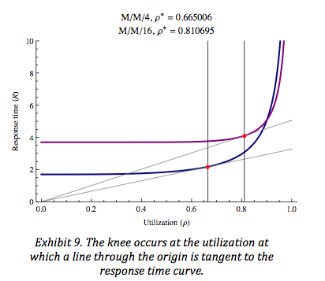
关于M/M/m模型“膝值”的另一个很好的属性是你只需要知道一个参数就可以计算出它。 这个参数就是系统中并行的、相同的和独立的服务通道数。
服务通道是一种资源，它们共享一个队列，其他资源像收费站或者SMP(Symmetric multiprocessing
对称多处理)结构的计算机中的CPU都是类似的概念。
在M/M/m模型中，这个小写的m就表示服务通道数。 对任意一个系统来说，计算“膝值”都是很困难的，好在我已经给你计算出来了。
图表10中给出了不同服务通道数与“膝值”的对应关系。
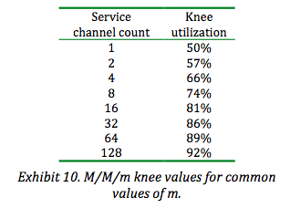
为何“膝值”如此重要？
对于那些请求随机到达的系统，如果资源负载持续超过“膝值”，那么响应时间和吞吐会因为负载的轻微变化而严重波动。 所以：
对于请求随机到达的系统而言，保持负载低于膝值是至关重要的。
15. 膝值的相关性
那么“膝值”的概念是不是真的如此重要呢？
毕竟，我曾经告诉过你M/M/m模型建立在一个理想的乌托邦理念之上，那就是系统拥有完美的可扩展性。 我知道你正在想什么：你想的都是错的。
M/M/m模型告诉我们，即便你的系统拥有完美的可扩展性，你依然会遭遇巨大的性能问题只要系统的平均负载超过了图表10中给出的膝值。 那么现实中你的系统不可能比M/M/m假设的理论系统更完美。 所以，你的系统的真实“膝值”会比我在图表10中给出的更小。（我在这里对膝值使用了复数形式，因为你可以基于CPU来建立膝值模型，同时也可以基于你的磁盘、网络I/O等等）
再次说明：
1. 你的系统中的每一项资源都有一个“膝值”。
2.
你的系统“膝值”都是小于或等于图表10中给出的理论值，你的系统扩展的完美性越差，“膝值”越小。
3.
对于请求随机到达的系统，如果资源负载持续超过“膝值”，你将遭遇性能问题。
所以，保持负载低于膝值是至关重要的。
16. 容量规划
理解了“膝值”可以减少容量规划的复杂性，可以这样来规划：
1.
某项资源的容量就是在高峰期能轻松的运行你的任务而资源使用率不会超过“膝值”。
2.
保持资源利用率低于“膝值”，那么系统表现就基本不会给你带来大的“惊喜”。
3.
但是，如果你系统中任何一项资源超出了它们的“膝值”，你就会遭遇性能问题，无论你是否意识到。
4.
如果你遭遇性能问题，不要纠结于数学模型上，要修正这些问题要么重新安排下负载分配，要么减少负载，要么增加容量。
这就是将性能管理过程和容量规划结合起来的办法。
17. 随机到达
你可能已经注意到了，我在前文经常提及“随机到达”这个说法，为什么它如此重要？
现在一些系统拥有的特征你可能不会具备，如：完全确定的作业调度。
另外一些系统被配置为接受任务的方式像是机器人模式，如每秒接受一个任务，十分固定，当然现在这些系统很少见了。
我这里说的一秒一个任务，并不是说平均一秒一个任务，例如第一秒2个任务，而下一秒0个任务。
我指的是均匀的一秒来一个任务，类似汽车工厂组装线上机器人的工作模式。
如果任务到达系统是完全确定的，就是说你完全能预知下一个请求什么时候到达，那么让资源的使用率超过“膝值”必然不会引发性能问题。
对于一个任务到达很确定的系统，那么你的目标应该是将资源利用到100%，而不是让它们排队等待。
“膝值”对于随机到达的系统如此重要的原因是，随机任务请求往往会聚集并引发短暂的资源使用脉冲式上升。
这些脉冲式上升需要足够的剩余容量来消化它们，所以当脉冲发生时可能就会引发排队延迟并导致响应时间的明显起伏。
短暂的脉冲并导致资源使用率超过“膝值”也还好，只要不要持续达到数秒时间。 这个数秒到底应该是多少秒呢？
我相信（当然我没试过去证明）这个时间最好不要超过8秒。（来自著名的互联网8秒原则）
如果你无法满足在特定百分比下响应时间和吞吐量对用户的承诺，那么很显然系统脉冲上升持续时间太长了。
18. 相关性延迟
你的系统肯定不具备理论上的完美扩展性。
尽管我从没分析过你的系统，但我敢打赌无论你的系统是什么样的也不具备“M/M/m”理论模型假设的完美扩展性。
那么相关性延迟正是你的建模不可能完美的原因。 执行任务时花在对共享资源访问的协商和通信的时间就是相关性延迟。
和响应时间、服务时间、排队延迟一样，相关性延迟也可以在任务的执行中被测量，例如每点击秒数。
这里我并不想描述预测相关性延迟的数学模型。 但如果你分析过你的任务执行情况，你可以了解什么时候相关性延迟会发生。
在oracle中，一些同步的事件正是相关性延迟的例子：
入队列（enqueue）
缓冲忙等待（buffer busy waits）
闩锁释放（latch free）
你不能使用M/M/m来对相关性延迟进行建模。 因为M/M/m模型假设了你的m个服务通道是完全并行的、等同的和独立的。
这个模型假设在一个先进先出（FIFO）队列中，只要你等待的时间足够长，在你之前的请求已出队列并得到服务，那么最终你也会得到服务。
但是相关性延迟不是这样工作的。
例： 假设在一个HTML数据表单上，有个按钮是“更新”，点击它会执行一条SQL更新语句。 另外一个按钮是“保存”，点击它执行事务提交将刚才的更新保存下来。 如果一个应用是这样做的，我可以保证它的性能是非常糟糕的。 这是因为这样一种设计，让下面的场景成为可能的，实际上这也是必然可能的。 一个用户先点击了“更新”，发现到了午餐时间，然后就去吃饭了，过了两小时下午回来再点击保存。
对于想要更新同一行的其他任务来说，这是一个灾难。 其他任务不得不等待获取行锁，更糟的情况下甚至是页锁。 直到原来锁定的用户想起继续点击“保存”。 或者DBA来杀掉原来锁定用户的会话，这样的话当然又会给原用户造成错觉，他以为他更新了一行实际却没有，这可糟透了。
在这个例子中，不管系统繁忙与否，一个任务就在那无所事事的等待锁的释放。 它依赖了系统资源利用率之外的一些随机性因素。 这就是为什么你不能使用M/M/m模型来对其进行建模。 这也是为什么在一个单元测试环境下的性能测试结果不足以用来决策是否应该在生产环境添加一些新的代码。
19. 性能测试
我们谈到的排队延迟、相关性延迟引发了一个很困难的问题。
你如何对一个新的应用进行足够的测试，让你信心满满的认为它不为因为性能问题而对你的生产程序造成破坏。 你可以去建模，也可以去测试。
但是，为所有你可以预见的生产问题去建立模型和测试是极其困难的，在你真正遭遇这些问题之前。
因此，一些人看到了这样窘境，因此申辩说那么就干脆别测试了。
千万别被这样的心态所困扰。
下面几点是很确定的：
1. 在程序进入生产环境之前，如果你尝试去发现一些问题你肯定会比那些完全不去做的找到更多的问题。
2. 在预发布的测试中，你不可能发现所有的问题。
3. 所以你需要一些可靠并有效的方法来解决这些在预发布测试中漏掉的问题。
在完全不测试和完整的生产环境模拟测试之间，存在一个适度测试量的平衡点。 当然对于一家飞机制造商来说，适度测试量肯定多于一家销售棒球帽的公司。 但千万别完全跳过性能测试。 至少，当你在生产环境遭遇不可避免的性能问题时，一份性能测试计划将使你成为一名更称职的诊断专家（更清晰的思考者）。
20. 测量
人们能感知到的就是吞吐量和响应时间。
吞吐量很容易测量，相对来说测量响应时间要稍微困难些。（还记得吧，吞吐量和响应时间可不是简单的倒数关系）
用个秒表来计时终端用户的行为并不困难，但你不会从中得到你真正想要的关于为什么响应时间如此之大的细节。
不幸的是，人们总是测量他们容易测量的，而不是他们应当测量的。 当我们需要测量的东西不容易测量时，我们就把注意力转移到那些容易得到测量数据上了。 这是个错误。 那些并不是你真正需要的测量，但看起来似乎和你真正需要的有些相关又容易去执行的测量，我们称之为“替代测量”。 一些“替代测量”例子包括像子程序调用计数和子程序执行耗时的采样数据。 对于“替代测量”，很遗憾在我的母语中没有更好的语句来表达我的想法，但有一个大家都熟悉的现代表达方式:
"替代测量真是恶心（Surrogate measures suck.）"
不幸的是，”恶心“在这里并不表示它“没用”。 要是替代测量真的没用就好了，那就没人会使用它们了。
问题就在于替代测量有时是有用的，这让使用替代测量的人相信它们总是有用，但实际并不是这样。
替代测量有两个严重的问题：
1. 它们可能在系统不正常时告诉你系统一切正常，这在统计学上叫做第一型错误，假阳性。
2.
它们也可能在系统正常时告诉你系统出问题了，这在统计学上叫做第二型错误，假阴性。
这两类错误浪费了人们许多的时间。
当你去评测一个真实系统方方面面，你能否取得成功在于你能从那个系统中获得多少有效的测量数据。 我曾有幸在oracle的市场部门工作过，那时许多软件供应商围绕着我们积极的参与，这才使得正确的测量系统成为可能。 让软件开发者使用oracle提供的工具是另外一回事了，至少我们的产品中具备这样的能力（记录有效的测量数据）。
21. 性能是一项功能
性能是软件程序的一项功能，就像在你的bug跟踪系统中很方便的将“Case
1234”这样一个字符串自动链接到编号1234的bug案例上。 性能像所有其他软件功能一样，不是凑巧得到的。 你需要去设计和构建它。
要想获得好的性能，你不得不去仔细的思考、研究、学习，写出额外的代码来测试和支持它。
尽管如此，像所有其他功能特性一样，在项目初期你还在调研、设计和编写代码时你不可能知道性能到底会怎样。
对大多数应用（可能是绝大多数，这个说法可能有争议）而言性能都是未知的，直到它们进入生产阶段。
那么留给你的问题就是：
“因为在上线前你不可能知道你的应用性能表现到底怎样，因此你需要在编写应用时考虑怎样很容易的在生产环境修复性能问题。”
正如大卫·加文（David Garvin）教我们的容易测量的东西也更容易管理（来自《建立一个学习型组织》1993年发表于《哈佛商业评论》） 那么要写一个在生产环境容易修复问题的应用首先要做的就是要容易在生产环境测量。 大多数时候，当我提到生产环境的性能测量时人们会陷入一种焦虑状态，他们很担心性能测量带来的入侵效应。 他们立刻对采集哪些数据做出了妥协，只留下那些”替代测量“（更容易采集的）在数据采集表上。 拥有额外数据采集代码的软件会变的比没有这些代码的更慢么？
我喜欢汤姆·凯特（Tom Kyte）曾经对这个问题的回答。 他估计额外的性能度量代码给oracle带来不超过10%性能损失。 他接着向那些气恼的提问者作出解释，正是因为从这些性能测量代码获取的数据让oracle公司进一步将产品性能改进提升了不止10%，这超出了性能测量代码本身引发的开销。
我认为很多软件供应商他们通常花费了太多时间来优化他们的性能测量代码路径使其更高效，而不是首先搞清楚怎么让这些代码有效果。
高德钠（Donald Knuth）曾在1974说过的一句话印证了这个观点：
“过早的优化是一切罪恶的根源”。
软件设计者将性能测量代码整合进他们的产品中更有可能创建一个高性能的应用，更重要的是这个应用会不断变的更快。
22. 致谢（略）
23. 关于作者 Cary Millsap 是一位在oracle全球社区著名的演讲者、教育者、顾问和作者。 他目前是一家致力于软件性能优化方面的小公司的创建者和CEO。 其他详细信息参见作者linkedIn的介绍 http://www.linkedin.com/pub/cary-millsap/0/296/118 （部分内容省略）
24. 尾声：关于“膝值”的公开辩论
在本文的14到16节，我描述了“膝值”的性能曲线、它们的相关性和应用。
但是，在20年前有一场关于是否值得定义一个“膝值”概念的公开辩论。
历史上的一个重要的观点认为我所描述的“膝值”并不是真正有意义的。 在1988年，斯蒂芬·萨姆森（stephen samson）争论说至少在M/M/1的排队系统的性能曲线中并不存在“膝值”。 他写道：“选择一个具备指导意义的数字并不容易，经验法则还是最适用的。在大多数情况下都不存在膝值，无论你多么希望找到一个。”
1999年，温水煮青蛙的故事启发了我。 这个故事是这样的说的，当你把一只青蛙扔进煮沸的开水中，它会立刻跳出来。 但假如你先把它放在冷水中并慢慢的加热水温，青蛙会安静的呆在水里直到被煮熟了。 对于资源使用率，它就像是沸水，有一个清晰的“死亡区间”，在这个区间值内，对于随机到达的请求你的系统将不堪重负。 那么“死亡区间”的边界在哪里？如果你尝试用程序来自动管理资源使用率，你就必须知道这个值。
最近，我的朋友尼尔·冈瑟（Neil Gunther）跟我有一场私下的辩论。
首先，他认为“膝值”这个术语使用在这里是完全错误的，因为在没有函数连续性中断的前提下使用“膝值”是错误的。
其次，他认为对于M/M/1系统的“膝值”在0.5是过于浪费了，你应当更多的利用好系统资源，它应高于0.5的资源利用率。
最后，他认为你对使用率的明确定义取决于实际的平均响应时间相对你能忍受的平均响应时间实际超出了多少。
因此，冈瑟认为任何有用的使用率阈值的定义都来源于询问人们自身的偏好，而非来自于数学。（图表11）
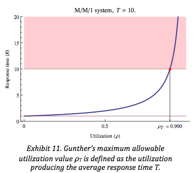
从图表12中，我们可以看出这个说法的问题所在。 假设，你对平均响应时间的忍耐限度是T，那么对应的最大资源利用率是ρT。
你会看到在ρT附近资源利用率一个微小的变化都会导致响应时间巨大的波动。
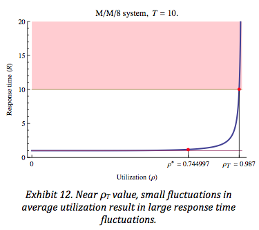
我相信如我在第4节所写的，客户感受到的是差异变化，而非平均。 或许他们会说我们能够接受平均响应时间达到T，但我不相信人们能忍受因为系统平均负载发生了1%的变化导致平均响应时间达到1分钟，换句话说就是平均响应时间翻了10倍。 我确实了解我在14节列出的“膝值”列表比很多人直觉上感受到地安全值更低一些，特别是对“低阶”的系统如M/M/1而言。 尽管如此，但我相信避免因为资源使用率的微小变化引发响应时间的过大波动，这是极其重要的。
话虽如此，我也不知道该如何确切的定义“过大”这个词。 像响应时间波动的忍耐度，不同的人有不同的底线。 或许有一个起伏忍耐的因子适用于所有人。 例如，Apdex standard(Application Performance Index)假设了响应时间F是T的4倍就会让人们的态度从“满意”变为“煎熬”。
“膝值”无论你怎么去定义或称呼它，对于容量规划过程来说都是一个十分重要的参数，正如我在16节中描述的。
并且我相信它对日常的系统负载管理也是一个重要参数。
我会继续保持研究。